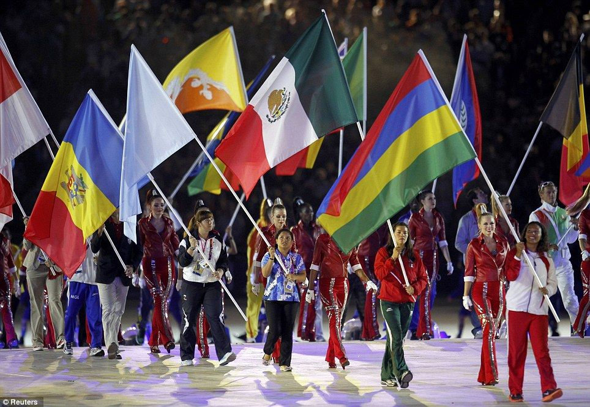
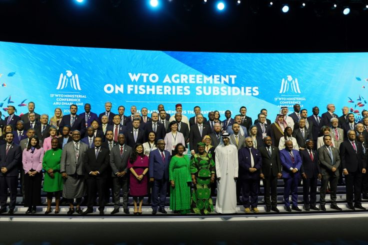
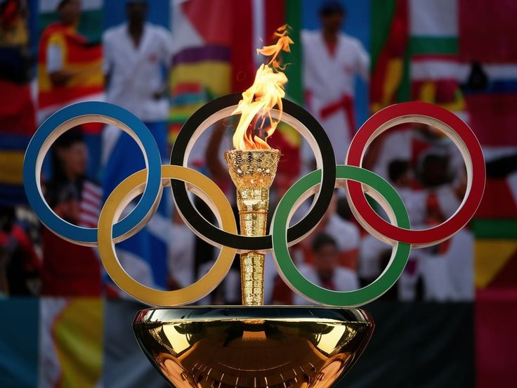

Kerjasama Internasional
Kerjasama internasional adalah hubungan antarnegara dalam berbagai
bidang kehidupan untuk memenuhi kebutuhan, menyelesaikan masalah,
dan mencapai kepentingan bersama. Kerjasama ini dapat dilakukan oleh pemerintah negara, organisasi internasional, lembaga pendidikan, perdangan, dan budaya

Ciri-Ciri Kerjasama Internasional
- Keberadaan negara-negara yang menjalin hubungan resmi
- Adanya kepentingan bersama dan keinginan untuk mengejar tujuan atau minat yang sama
- Adanya asas dan aturan yang mengatur hubungan tersebut

Bentuk Kerjasama Internasional
- Ekonomi → perdagangan, investasi, bantuan pembangunan
- Pendidikan → pertukaran pelajar, beasiswa
- Kesehatan → penanganan wabah penyakit
- Pertahanan & Keamanan → latihan militer gabungan
- Budaya → festival budaya antarnegara
Contoh Kerjasama Internasional



